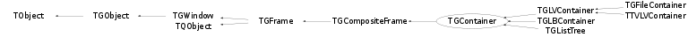

class TGContainer: public TGCompositeFrame
TGCanvas and TGViewPort and TGContainer A TGCanvas is a frame containing two scrollbars (a horizontal and a vertical) and a viewport. The viewport acts as the window through which we look at the contents of the container frame. A TGContainer frame manages a content area. It can display and control a hierarchy of multi-column items, and provides the ability to add new items at any time. By default it doesn't map subwindows which are items of the container. In this case subwindow must provide DrawCopy method, see for example TGLVEntry class. It is also possible to use option which allow to map subwindows. This option has much slower drawing speed in case of more than 1000 items placed in container. To activate this option the fMapSubwindows data member must be set to kTRUE (for example TTVLVContainer class) The TGContainer class can handle the keys: o F7, Ctnrl-F - activate search dialog o F3, Ctnrl-G - continue search o End - go to the last item in container o Home - go to the first item in container o PageUp,PageDown,arrow keys - navigate inside container o Return/Enter - equivalent to double click of the mouse button o Contrl-A - select/activate all items. o Space - invert selection.
Function Members (Methods)
public:
protected:
| virtual void | ActivateItem(TGFrameElement* el) |
| static Int_t | TQObject::CheckConnectArgs(TQObject* sender, TClass* sender_class, const char* signal, TClass* receiver_class, const char* slot) |
| static Bool_t | TQObject::ConnectToClass(TQObject* sender, const char* signal, TClass* receiver_class, void* receiver, const char* slot) |
| static Bool_t | TQObject::ConnectToClass(const char* sender_class, const char* signal, TClass* receiver_class, void* receiver, const char* slot) |
| virtual void | DeActivateItem(TGFrameElement* el) |
| virtual void | TObject::DoError(int level, const char* location, const char* fmt, va_list va) const |
| virtual void | DoRedraw() |
| virtual void | TGFrame::Draw3dRectangle(UInt_t type, Int_t x, Int_t y, UInt_t w, UInt_t h) |
| static Time_t | TGFrame::GetLastClick() |
| static const TGGC& | GetLineGC() |
| TString | TGFrame::GetOptionString() const |
| const TGResourcePool* | TGFrame::GetResourcePool() const |
| virtual void* | TGFrame::GetSender() |
| virtual const char* | TQObject::GetSenderClassName() const |
| void | TObject::MakeZombie() |
| virtual void | OnAutoScroll() |
| virtual void | RepeatSearch() |
| virtual void | SearchPattern() |
| virtual void | TGFrame::StartGuiBuilding(Bool_t on = kTRUE) |
private:
| TGContainer(const TGContainer&) | |
| TGContainer& | operator=(const TGContainer&) |
Data Members
public:
| enum TGFrame::[unnamed] { | kDeleteWindowCalled | |
| }; | ||
| enum TGWindow::EEditMode { | kEditEnable | |
| kEditDisable | ||
| kEditDisableEvents | ||
| kEditDisableGrab | ||
| kEditDisableLayout | ||
| kEditDisableResize | ||
| kEditDisableHeight | ||
| kEditDisableWidth | ||
| kEditDisableBtnEnable | ||
| kEditDisableKeyEnable | ||
| }; | ||
| enum TObject::EStatusBits { | kCanDelete | |
| kMustCleanup | ||
| kObjInCanvas | ||
| kIsReferenced | ||
| kHasUUID | ||
| kCannotPick | ||
| kNoContextMenu | ||
| kInvalidObject | ||
| }; | ||
| enum TObject::[unnamed] { | kIsOnHeap | |
| kNotDeleted | ||
| kZombie | ||
| kBitMask | ||
| kSingleKey | ||
| kOverwrite | ||
| kWriteDelete | ||
| }; |
protected:
| Pixel_t | TGFrame::fBackground | frame background color |
| Bool_t | fBdown | |
| Int_t | TGFrame::fBorderWidth | frame border width |
| TGCanvas* | fCanvas | pointer to canvas |
| TGClient* | TGObject::fClient | Connection to display server |
| Int_t | TGFrame::fDNDState | EDNDFlags |
| Bool_t | fDragging | true if in dragging mode |
| UInt_t | TGWindow::fEditDisabled | flags used for "guibuilding" |
| UInt_t | TGFrame::fEventMask | currenty active event mask |
| TGRectangle | fExposedRegion | exposed area |
| TGFrameElement* | TGFrame::fFE | pointer to frame element |
| UInt_t | TGFrame::fHeight | frame height |
| Handle_t | TGObject::fId | X11/Win32 Window identifier |
| TString | fKeyInput | keyboard input (buffer) |
| TTimer* | fKeyTimer | keyboard timer |
| Bool_t | fKeyTimerActive | kTRUE - keyboard timer is active |
| TGFrameElement* | fLastActiveEl | last active item |
| Bool_t | fLastCase | case sensetivity of last search |
| Bool_t | fLastDir | direction of last search |
| TString | fLastName | the name of object of last search |
| Bool_t | fLastSubstring | substring search option of last search |
| Bool_t | TGCompositeFrame::fLayoutBroken | no layout manager is used |
| TGLayoutManager* | TGCompositeFrame::fLayoutManager | layout manager |
| TList* | TGCompositeFrame::fList | container of frame elements |
| TList* | TQObject::fListOfConnections | ! list of connections to this object |
| TList* | TQObject::fListOfSignals | ! list of signals from this object |
| Bool_t | TGCompositeFrame::fMapSubwindows | kTRUE - map subwindows |
| UInt_t | TGFrame::fMaxHeight | maximal frame height |
| UInt_t | TGFrame::fMaxWidth | maximal frame width |
| UInt_t | TGFrame::fMinHeight | minimal frame height |
| UInt_t | TGFrame::fMinWidth | minimal frame width |
| const TGWindow* | fMsgWindow | window handling container messages |
| Int_t | TGCompositeFrame::fMustCleanup | cleanup mode (see EFrameCleanup) |
| TString | TGWindow::fName | name of the window used in SavePrimitive() |
| Bool_t | TGWindow::fNeedRedraw | kTRUE if window needs to be redrawn |
| Bool_t | fOnMouseOver | kTRUE when mouse pointer is over entry |
| UInt_t | TGFrame::fOptions | frame options |
| const TGWindow* | TGWindow::fParent | Parent window |
| TTimer* | fScrollTimer | autoscroll timer |
| Bool_t | fScrolling | kTRUE - when scrolling is ON |
| Int_t | fSelected | number of selected items |
| Bool_t | TQObject::fSignalsBlocked | ! flag used for suppression of signals |
| Int_t | fTotal | total items |
| TGViewPort* | fViewPort | container viewport |
| UInt_t | TGFrame::fWidth | frame width |
| Int_t | TGFrame::fX | frame x position |
| Int_t | fX0 | |
| Int_t | fXDND | |
| Int_t | fXf | |
| Int_t | fXp | |
| Int_t | TGFrame::fY | frame y position |
| Int_t | fY0 | corner of rubber band box |
| Int_t | fYDND | |
| Int_t | fYf | other corner of rubber band box |
| Int_t | fYp | previous pointer position |
| static Bool_t | TQObject::fgAllSignalsBlocked | flag used for suppression of all signals |
| static const TGGC* | TGFrame::fgBckgndGC | |
| static const TGGC* | TGFrame::fgBlackGC | |
| static Pixel_t | TGFrame::fgBlackPixel | |
| static Int_t | TGWindow::fgCounter | counter of created windows in SavePrimitive |
| static Window_t | TGFrame::fgDbw | |
| static Int_t | TGFrame::fgDbx | |
| static Int_t | TGFrame::fgDby | |
| static Pixel_t | TGFrame::fgDefaultFrameBackground | |
| static TGLayoutHints* | TGCompositeFrame::fgDefaultHints | default hints used by AddFrame() |
| static Pixel_t | TGFrame::fgDefaultSelectedBackground | |
| static const TGGC* | TGFrame::fgHilightGC | |
| static Bool_t | TGFrame::fgInit | |
| static UInt_t | TGFrame::fgLastButton | |
| static Time_t | TGFrame::fgLastClick | |
| static TGGC* | fgLineGC | |
| static const TGGC* | TGFrame::fgShadowGC | |
| static UInt_t | TGFrame::fgUserColor | |
| static const TGGC* | TGFrame::fgWhiteGC | |
| static Pixel_t | TGFrame::fgWhitePixel |
Class Charts
{kind=link}
{kind=link}
{kind=link}
{kind=link}

Function documentation
TGContainer(const TGWindow* p = 0, UInt_t w = 1, UInt_t h = 1, UInt_t options = kSunkenFrame, Pixel_t back = GetDefaultFrameBackground())
Create a canvas container. This is the (large) frame that contains all the list items. It will be shown through a TGViewPort (which is created by the TGCanvas).
TGContainer(TGCanvas* p, UInt_t options = kSunkenFrame, Pixel_t back = GetDefaultFrameBackground())
Create a canvas container. This is the (large) frame that contains all the list items. It will be shown through a TGViewPort (which is created by the TGCanvas).
void KeyPressed(TGFrame* , UInt_t keysym, UInt_t mask)
Signal emitted when keyboard key pressed frame - activated frame keysym - defined in "KeySymbols.h" mask - modifier key mask, defined in "GuiTypes.h" const Mask_t kKeyShiftMask = BIT(0); const Mask_t kKeyLockMask = BIT(1); const Mask_t kKeyControlMask = BIT(2); const Mask_t kKeyMod1Mask = BIT(3); // typically the Alt key const Mask_t kButton1Mask = BIT(8); const Mask_t kButton2Mask = BIT(9); const Mask_t kButton3Mask = BIT(10); const Mask_t kButton4Mask = BIT(11); const Mask_t kButton5Mask = BIT(12); const Mask_t kAnyModifier = BIT(15);
void ReturnPressed(TGFrame* )
Signal emitted when Return/Enter key pressed.
It's equivalent to "double click" of mouse button.
void SpacePressed(TGFrame* )
Signal emitted when space key pressed. Pressing space key inverts selection.
void DrawRegion(Int_t x, Int_t y, UInt_t w, UInt_t h)
Draw a region of container in viewport. x, y, w, h are position and dimension of area to be redrawn in viewport coordinates.
const TGPicture * GetObjPicture(TGFrame* f)
Retrieve icons associated with class "name". Association is made
via the user's ~/.root.mimes file or via $ROOTSYS/etc/root.mimes.
Bool_t HandleKey(Event_t* event)
The key press event handler converts a key press to some line editor action.
TGFrameElement * FindFrame(Int_t x, Int_t y, Bool_t exclude = kTRUE)
Find frame located int container at position x,y.
void * FindItem(const TString& name, Bool_t direction = kTRUE, Bool_t caseSensitive = kTRUE, Bool_t subString = kFALSE)
void SavePrimitive(ostream& out, Option_t* option = "")
Save a canvas container as a C++ statement(s) on output stream out.
TGContainer(const TGContainer& )
TGContainer& operator=(const TGContainer& )